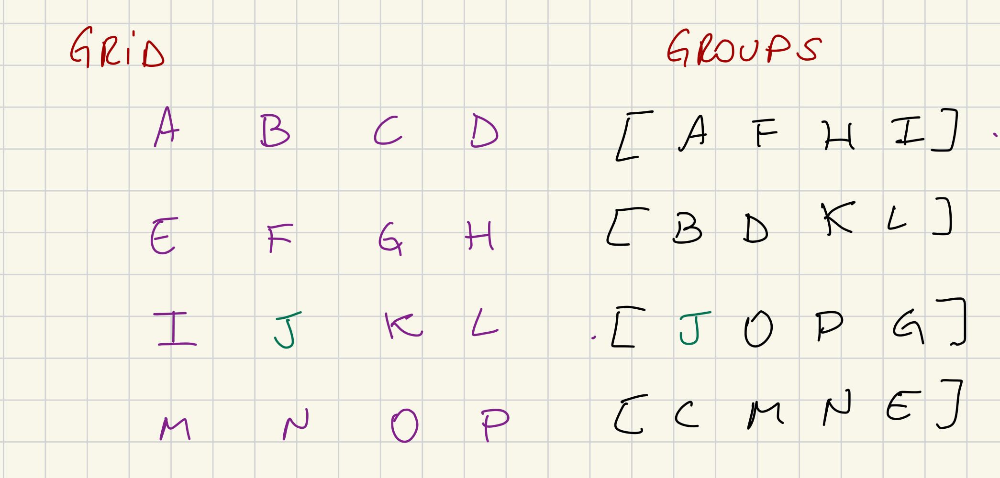

Statement Distribution¶
This subsystem is responsible for distributing signed statements that we have generated and forwarding statements generated by our peers.
Subsystem Structure¶
The subsystem needs to handle multiple channels, beyond the overseer channel we also need to manage request and responses channels that are generated by spawned goroutines. These goroutines are called "responders" and in the parity implementation there exists 2 "responders", larger_statement_responder (legacy) and candidate_responder (v2).
The responsibility of these "responders" is to listen for incoming requests and forward them to inside the statement distribution (as they are spawned goroutines), which will reach the target function that will respond to the request properly. The "responders" also act as a limiter on the amount of requests we are capable of handling.
For V2: - Incoming request type AttestedCandidateRequest - Response type AttestedCandidateResponse - The handler answer_request
For V1 (No need for handling such requests or implementing the handlers, will be removed soon see https://github.com/paritytech/polkadot-sdk/issues/4447): - Incoming request type StatementFetchingRequest - The handler handle_responder_message
The V2 brings a new advantage, the validators don't send each other heavy CommitedCandidateReceipt, but instead request them lazily through request/response protocols.
The messages that validators can exchange are:
- Statement: contains only a signed compact statement;
- BackedCandidateManifest: advertise a description of a backed candidate and stored statements;
- BackedCandidateAcknowledgement: acknowledges that a backed candidate is fully known.
Messages Received¶
The subsystem must be registered with the overseer and handle subsystem-specific messages from it:
-
We have originated a signed statement in the context of given relay-parent hash and it should be distributed to other validators
-
The candidate received enough validity votes from the backing group. If the candidate is backed as a result of a local statement, this message MUST be preceded by a
Sharemessage for that statement. This ensures that Statement Distribution is always aware of full candidates prior to receiving theBackednotification, even when the group size is 1 and the candidate is seconded locally -
Event from the network bridge.
Messages Sent¶
-
Send a batch of validation messages and they will be send in order
-
Send a message to one or more peers on the validation peer-set.
-
Note a validator's statement about a particular candidate in the context of the given relay-parent. Disagreements about validity must be escalated to a broader check by the Disputes Subsystem, though that escalation is deferred until the approval voting stage to guarantee availability. Agreements are simply tallied until a quorum is reached.
-
Get the hypothetical or actual membership of candidates with the given properties under the specified active leaf associated fragment chain. For each candidate, we return a vector of leaves where the candidate is present or could be added. "Could be added" either means that the candidate can be added to the chain right now or could be added in the future (we may not have its ancestors yet). Note that even if we think it could be added in the future, we may find out that it was invalid, as time passes. If an active leaf is not in the vector, it means that there's no chance this candidate will become valid under that leaf in the future. If
fragment_chain_relay_parentin the request isSome(), the return vector can only contain this relay parent (or none). -
Sends request via normal network layer
Subsystem State¶
The Statement Distribution subsystem currently has 2 states to manage under the current implementation but here we should focus on v2::State given that v1::State is legacy code and will be removed soon see https://github.com/paritytech/polkadot-sdk/issues/4447.
The state holds - the implicit view - candidates (a tracker for all known candidates in the view) - per-relay-parent state - per-session state - unused topologies (topologies might be received before the first leaf update, so we should cache it) - peers view and state - keystore - authorities (a map from authority id to peer id) - request and response manager
Message Handling Logic¶
-
handle_subsystem_message: This handler deals with multiple kinds of messages from the overseer (also other subsystems):
-
OverseerSignal::ActiveLeaves: we should implement the
v2::handle_active_leaves_updateand also v2::handle_deactivate_leaves -
StatementDistributionMessage::Share: this message is handled by
v2::share_local_statement, where a local originated statement is imported and need to be distributed to peers, callsv2::circulate_statement -
StatementDistributionMessage::NetworkBridgeUpdate: messages coming from network bridge might be labeled with its version. We should focus only on messages labeled
Version::V2andVersion::V3. Messages targeting the current protocol they are handled byv2::handle_network_update. The message from the network bridge can unwrap in one of the following messages: NetworkBridgeEvent::PeerConnected: update the current subsystem state peer viewNetworkBridgeEvent::PeerDisconnected: update the current subsystem state peer viewNetworkBridgeEvent::NewGossipTopology: given the incoming topology checks if we already have such session index to supply the topology, otherwise keep it in theunused_topologyNetworkBridgeEvent::PeerViewChange: handled byhandle_peer_view_updateNetworkBridgeEvent::OurViewChange: do nothingNetworkBridgeEvent::UpdatedAuthorityIds: we could find the PeerIDs of current session authorities, update them in the subsystem state.-
NetworkBridgeEvent::PeerMessage:StatementDistributionMessage::V1(_): ignore the messageStatementDistributionMessage::V2(protocol_v2::StatementDistributionMessage::V1Compatibility): ignore the messageStatementDistributionMessage::V3(protocol_v3::StatementDistributionMessage::V1Compatibility): ignore the messageStatementDistributionMessage::V2(protocol_v2::StatementDistributionMessage::Statement): handled byhandle_incoming_statementStatementDistributionMessage::V3(protocol_v3::StatementDistributionMessage::Statement): handled byhandle_incoming_statementStatementDistributionMessage::V2(protocol_v2::StatementDistributionMessage::BackedCandidateManifest): handled byhandle_incoming_manifestStatementDistributionMessage::V3(protocol_v3::StatementDistributionMessage::BackedCandidateManifest): handled byhandle_incoming_manifestStatementDistributionMessage::V2(protocol_v2::StatementDistributionMessage::BackedCandidateKnown): handled byhandle_incoming_acknowledgementStatementDistributionMessage::V3(protocol_v3::StatementDistributionMessage::BackedCandidateKnown): handled byhandle_incoming_acknowledgement
-
StatementDistributionMessage::Backed: handles the notification of a candidate being backed. The candidate should be known before to be handled correctly if the candidate is not known the message is dropped. This calls
provide_candidate_to_gridwhich provides the a backable candidate to the grid and dispatchs backable candidates announcements and acknowledgments via grid topology, if the session topology is not yet available then it will be a noop. Next method used isprospective_backed_notification_fragment_chain_updateswhich retrieve hypothetical membership from Prospective-Parachains and send them to Candidate-Backing subsystem as fresh statements through the functionsend_backing_fresh_statements. -
After
ResponseManagerreceives a message from the peer we're requesting some data this handler is triggered to handle the incoming response. -
Given a
AttestedCandidateRequestrequest we should respond the request for the asked candidate hash. -
This method is called in 2 situations: right after one of the above handles finishes execution, that is why while handling a message we might have produced a request to dispatch for example: we received a
Manifestmessage and now we need to request the candidate so we build the candidate request and place them in theRequestManagerqueue and after handling the message we calldispatch_requests. The second situation is when we receive aRetryRequestmessage coming fromRequestManager, meaning that we have failed requests in the queue to dispatch.
Grid Mode¶
Here is a brief explanation of the function build_session_topology that is an important part to define our sender/receivers in the grid mode topology
The method build_session_topology builds a view of the topology for the session. The network bridge gives us the entire grid topology for a certain session. In it, we know our neighbors in the X axis and Y axis (based on our validator index). So together with the Groups, which is the validator group within the session, we can define the peers we expect to receive messages and the peers we should send messages to.
-
We should not send
ManifestsorAcknowledgementsto validators in the same group as ours. They are already present in the Cluster topology. We should send those messages to peers in the same "row" and "column" as ours if they are not part of our group. -
if the validator is not in the same group, we should check if we share the same "row" or "column". If we share the same ROW then I expect to receive messages from him, and I will propagate his messages with my COLUMN neighbors that are not part of the sender's group. It's the same logic the other way around. If we share the same COLUMN then I expect to receive messages from him, and I will propagate his messages with my ROW neighbors that are not part of the sender's group.
Take the example:

1) Considering that J is our validator index, we share X axis with [I, K, J] and Y axis with [B, F, N], lets say that a message coming from B arrives, we can only propagate the message to validator I, as K and L are from the same group as B.
2) Considering that we, J, want to share a Manifest with our grid neighbors, we can send the message to [I, K, J] and [B, F, N] as they are not part of the group I belong to.
Request and Response Managers¶
Whenever we're handling an incoming statement or handling an incoming manifest we do check if we have the related candidate, if we don't know it we should request if from the peer and that is made through RequestManager and ResponseManager.
The outgoing requests are managed by the request manager, and it is responsible also for holding requests that failed and marking them to retry later. After the Statement Distribution finishes to handling some message it calls v2::dispatch_requests which will drain the requests in the RequestManager manager queue and will now track the in-flight requests in the ResponseManager, that is made through a communication channel, the request will be sent to NetworkBridgeSubsystem and the ResponseManager will wait until any info comes through communication channel pipe (receive_response), when that happens the message will be handled by Statement Distribution Subsystem under handle_response.